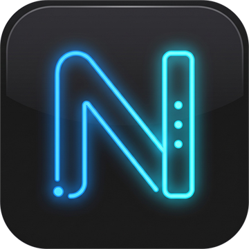

Neuf applications françaises, un seul panneau. Pilotes, performances,
nettoyage, archives, audio, médias, torrents : tout ce qui manque à Windows,
réuni dans une suite qui ne vous espionne pas.
Un utilitaire Windows, c’est souvent trois publicités avant le premier bouton.
NeoSuite prend le contrepied : des applications qui font une chose, la font bien,
et s’effacent. Pas de compte. Pas de télémétrie. Pas de « Pro ».
Un panneau, une touche, et un PC qui répond — même trois ans après l’achat.
09applications natives
01installateur unique
00publicité, bundle, compte
100%local et français
01 — La suite
Neuf applis. Un seul réflexe.
Chaque outil vit sa vie, mais tous obéissent au même panneau.
Ctrl + Alt + N, où que vous soyez.
01
09
01Le panneauv0.6.0

NeoSuite
Un raccourci, toutes vos applis. Le panneau qui installe, met à jour et lance le reste.
Ctrl + Alt + N depuis n’importe quelle fenêtre
Installation et mises à jour en un clic
Élévation en administrateur seulement quand il faut
Toujours làSystème
02Pilotesv0.2.2
NeoDriver
Les pilotes, sans les boîtes de dialogue. Détecte, explique, installe — et sait revenir en arrière.
Périphériques en erreur expliqués en français
Installation .inf avec point de restauration
Scan hebdomadaire même quand l’appli est fermée
À jourSystème
03Performancesv0.3.2
NeoBoost
Le mode Boost qui s’explique : il suspend, il priorise, il remet tout en place. Et il prouve ses dires.
Programmes gourmands suspendus, pas tués
Historique CPU / mémoire sur 30 minutes
Santé des disques, de la batterie et de la mémoire
Boost actifPerformances
04Nettoyagev0.2.6
NeoUninstaller
Désinstaller vraiment. Programmes, restes, pilotes orphelins : ce qui part ne revient pas.
Dossiers, registre et services nettoyés
Pilotes orphelins repérés sans fausse alerte
Démarrage de Windows maîtrisé
PrêtNettoyage
05Logicielsv0.3.1
NeoSoft
Le catalogue qui cite ses sources. winget, les applis Neo, et rien d’autre que ce que vous demandez.
Sources officielles, catégories claires
Recherche étendue, paquets marqués « non vérifié »
Mises à jour groupées, sans bundle
12 mises à jourLogiciels
06Archivesv0.2.1
NeoRar
7-Zip au moteur, une vraie interface autour. Vos archives méritent mieux qu’un menu de 1998.
RAR, ZIP, 7z, TAR, GZ, ISO en lecture
AES-256, volumes .001, vérification CRC
Sauvegardes planifiées dans Windows
PrêtArchives
07Médiasv0.1.1
NeoMedia
VLC sans le menu de 1998. Vos vidéos s’ouvrent vite, se reprennent où vous les avez laissées.
Décodage matériel par la carte graphique
Vitesse, pistes, sous-titres, capture
« Lire avec NeoMedia » dans l’Explorateur
PrêtMédias
08Audiov0.2.0
NeoSound
Deux casques, un seul PC. Le filaire et le Bluetooth en même temps, sans grésillement.
Latence réglable, horloges recalées
Un casque lâche ? Les autres continuent
Dit franchement ce que Windows ne sait pas faire
2 casquesAudio
09Téléchargementsv0.1.0
NeoTorrent
Les torrents, sans client qui ressemble à un tableau de bord de centrale nucléaire.
Fichiers .torrent et liens magnet
Progression, vitesses et temps restant
Dossier de téléchargement personnalisable
2 torrentsTéléchargements
Faites défiler pour parcourirNeoSuite — le panneau
02 — Le mode Boost
Le boost qui s’explique.
NeoBoost ne « nettoie » pas la mémoire avec un balai magique.
Il suspend les programmes gourmands, donne la priorité à ce que vous utilisez,
et remet tout en place quand vous avez fini. Chaque étape est visible.
01
Priorité au premier plan
Le jeu ou l’application active reçoit le processeur en premier.
02
Suspendu, pas tué
Les programmes lourds sont mis en pause et restaurés au pixel près.
03
Retour arrière garanti
Tout revient à l’état initial, même après un redémarrage imprévu.
04
Des preuves, pas des promesses
Historique CPU et mémoire sur 30 minutes, pics horodatés.
Démo interactive. Rien n’est modifié sur votre PC.
NeoBoost — État du PCPrêt
78%Processeur
71%Mémoire
68°CTempérature
Charge processeur · 30 dernières minutes63 FPS
-30 min-15 minmaintenant
Programmes gourmands4 actifs
Pr
Adobe Premiere ProMontage vidéo
24 %3,8 Go
Na
Navigateur18 onglets ouverts
12 %2,1 Go
St
SteamClient en arrière-plan
9 %1,2 Go
OB
OBS StudioScène en pause
7 %940 Mo
› En attente d’une action.
0 Mo libérés0 suspendusSession réversible
03 — Nos promesses
Ce que nous ne ferons jamais.
Une suite installée sur votre PC devrait vous laisser tranquille.
Voici les trois règles qu’on s’est données — et qu’on tiendra.
01
Vos données restent chez vous.
Aucune télémétrie, aucun compte, aucun serveur tiers. NeoDriver interroge Windows Update, comme Windows lui-même. Le reste ne sort pas.
02
Chaque changement a un retour.
Point de restauration avant un pilote, retour à la version précédente, désinstallation qui nettoie derrière elle. Rien d’irréversible.
03
Une interface qui parle français.
Des messages clairs, des termes exacts, pas de jargon traduit à la va-vite. Et pas de publicité déguisée en recommandation.
Sans publicité Sans compte Sans bundle Sans version « Pro » Sans télémétrie
04 — Installation
Trois minutes. Une seule touche.
Pas de compte, pas de questionnaire, pas de redémarrage surprise.
Vous choisissez vos applis, NeoSuite s’occupe du reste.
01
Téléchargez NeoSuite
Un seul installateur, signé, pour Windows 10 et 11 en 64 bits.
02
Choisissez vos applications
Installez la suite complète ou seulement ce dont vous avez besoin.
03
Appuyez sur Ctrl + Alt + N
Le panneau s’ouvre par-dessus vos fenêtres. C’est tout.
Oui. Pas de version « Pro », pas d’abonnement, pas de fonctionnalité cachée derrière un paiement. La suite est développée pour un usage personnel, sans publicité. Vous pouvez soutenir le projet si vous le souhaitez, mais ce n’est jamais obligatoire.
02Faut-il créer un compte ?
Non. NeoSuite ne demande ni adresse e-mail, ni identifiant, ni connexion. Les applications fonctionnent hors ligne, sauf pour les mises à jour de pilotes et les téléchargements winget.
03Où sont installées les applications ?
Dans C:\Program Files\Neo\<App>, avec une entrée de désinstallation propre. NeoSuite peut aussi installer une seule application, sans le reste de la suite.
04NeoSuite remplace-t-il Windows Update ?
Non, et il n’essaie pas. NeoDriver complète Windows Update pour les pilotes que Windows ignore ou classe mal. Les correctifs système restent gérés par Windows.
05Le site collecte-t-il des données ?
Non. Pas de Google Analytics, pas de pixel, pas de cookie publicitaire. Cette page est un fichier statique : elle ne parle à aucun serveur pour fonctionner.
06Puis-je désinstaller une seule appli ?
Oui. Chaque application est indépendante. NeoUninstaller supprime les restes, et NeoSuite propose la réinstallation à tout moment.
07Comment soutenir NeoSuite ?
NeoSuite restera gratuit. Si vous voulez qu’il continue d’être amélioré et tenu à jour, vous pouvez devenir sponsor sur GitHub Sponsors, ou cliquer sur le bouton Sponsor de la page GitHub du projet. Une ⭐ sur GitHub aide aussi à le faire connaître. Merci !
Prêt quand vous l’êtes
Reprenez la main. Gardez le contrôle.
NeoSuite 0.6.0 · Windows 10 & 11 · x64 · sans compte